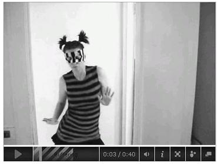

HAPPINESS HACK # 3 : ACTIVATING THE DANCE SECRET
幸福黑客 # 3: 激活舞蹈秘密
“As a happiness lesson, nothing could be more straightforward: if you get a chance to dance in a circle, get up out of your chair and do it.”27
27 That’s Jennifer Michael Hecht’s advice in The Happiness Myth, and with good reason. Dancing together has been used throughout human history as a reliable source of a special kind of euphoria, the dancer’s high.
Dancer’s high is what we feel when endorphins (from the physical movement) combine with oxytocin (from touch and synchronized movement) and the intense stimulation of our vagus nerve (what we feel when we “lose ourselves” in the rhythms of the music and are part of a crowd moving together). It’s an expansive mixture of excitement, flow, and affection that is hard to experience any other way.28
28
But dancing in groups also makes many people feel embarrassed or awkward. Everything from self-consciousness to social anxiety to a general disdain for any kind of group participation can prevent us from joining or fully enjoying a dance.
To really dance your heart out in front of others, to not hold back at all, is a daunting proposition for many (although certainly not all) people. It requires letting go, and showing people a side of yourself—exuberant, unguarded—that you might ordinarily keep hidden. For some, revealing that side requires a lot of trust in the people around you. And, in fact, according to positive-psychology researchers, the necessity of trust is one of the reasons why dancing is such a powerful happiness activity.
When we dance, we’re forced into an emotionally and socially vulnerable state in which we have to hope and trust that others will embrace us, rather than judge us. At the same time, we’re given the opportunity to embrace others and help them feel more comfortable dancing. In other words, dancing with others is a chance both to receive and to express our compassion, generosity, and humanity. As a result, Dacher Keltner writes, “Dance is the most reliable and quickest route to a mysterious feeling that has gone by many names over the generations: sympathy, agape, ecstasy, jen; here I’ll call it trust. To dance is to trust.”29
29
But first, we have to have both the desire to dance and the nerve to do it. Many of us are missing one or the other.
Some people, as a rule, just don’t like “getting involved.” And group dances in particular set off all kinds of hokiness alarms. It’s no coincidence that one of the best-known group dances is actually called the “hokey pokey.” If you’re not in the mood for dancing, when a big group dance breaks out at a wedding or a street festival, for instance, being dragged into it can feel incredibly forced and inauthentic.
Others have the desire, but simply lose the nerve.
The more I kept hitting up against the same happiness advice—dance more, in large groups if possible—the more convinced I became that there had to be a way to make it easier for introverted types who were more likely to watch from the sidelines to participate, and to give people who are already willing to dance together more daily opportunities. After all, even people who are ready and willing to dance anytime, anyplace, don’t get nearly enough opportunities. We simply don’t have a lot of everyday venues for dancing together. I began to wonder: how could we all sneak a few minutes dancing together into our everyday lives, not just the occasional weekend?
My solution: take all the basic mechanics of a massively multiplayer online role-playing game, and swap in real-life dance quests and dance-offs for traditional role-playing quests and raids. I called it Top Secret Dance-Off, or TSDO for short, and I launched it as a stand-alone social network site dedicated to the adventure of dancing together.
ADVENTURERS WANTED. NO DANCING TALENT REQUIRED.
Welcome to Top Secret Dance-Off, an underground network of otherwise ordinary people seeking to activate the dance secret—an elusive power said to be hardwired into our brains, and requiring highly unusual dance experiences to unlock it.
Top Secret Dance-Off is an adventure you can undertake anywhere in the world. No dance skills or talent is required. In fact, you may find yourself rewarded more for awkward dancing than for a virtuoso performance. Activating the dance secret isn’t about being a good dancer. It’s about being a clever dancer, a brave dancer, and occasionally a stealthy dancer.
Adventures will involve undertaking a variety of challenging, top secret dance missions on video, sometimes in the privacy of your home, and sometimes in the most unlikely environments. You may play alone, or with your friends. Mask wearing or other disguises are required.
As you try to activate the elusive dance secret, you’ll earn points by completing dance quests and participating in dance-offs. As you earn more points, you’ll level up. The higher the level, the more dance secret you’ve activated.
For every quest you complete and every dance-off you enter, you’ll also be earning choreopowers, such as style, courage, humor, and coordination. Your choreopowers reveal your personal strengths as a top secret dancer—and all choreopowers are awarded by other members of TSDO, in the comments on your videos.
Full activation of the dance secret occurs at level 100. How do you get there? Just complete twenty-one increasingly challenging quests and win at least a dozen dance-offs, and you’ll be fully activated for life.
Dance Quest #1: Disguise yourself.
Your first mission is to disguise yourself. After all, this is top secret.
But we’re not talking a full disguise. That would make dancing . . . difficult. So, to keep your TSDO identity a secret from the rest of the world, you must create a lightweight disguise that covers at least part of your face. It might be a mask, a scarf, modified sunglasses, face paint, a wig, or . . . ? It’s your face. You decide how to hide it. But make sure you really like your disguise—because you’ll need to don the exact same one for all future quests and dance-offs. Batman and Wonder Woman didn’t make new suits every time they went out to save the world, did they? So pick something you like, and stash it somewhere safe—and secret. You’ll be needing it.
Now: Make a video introducing yourself to the TSDO world. You must be 1) wearing your disguise and 2) dancing. Pick any song you like. BUT—and here’s the tricky party—keep your secret weapons in check for now. That means no moving your feet. Dance, but don’t move your feet. Like they’re locked in cement. Got it?
Keep the video short—less than thirty seconds. Upload it to the TSDO site when you’re ready to unleash your top secret dance identity and start earning your choreopowers.
Admittedly, this is not exactly dancing together, at least not in the traditional sense. Most of the dance quests and dance-offs involve dancing alone, then uploading a video to the Top Secret Dance-Off social network site. But the game serves two important purposes toward making it easier to dance together.
First, by providing a goal-oriented, feedback-rich, obstacle-intensive environment for dancing, it makes dancing more motivating, fun, and addictive. In other words, it increases a person’s likelihood of dancing at all. Second, TSDO puts dancing, even dancing around your apartment alone, into a collective social context. It still takes nerve to share your dancing with an online community—and it’s a real opportunity to express compassion, generosity, and humanity when we cheer on other players in the comments. In other words, the game is a hack for group dancing—a way to dance together alone, and make people more likely to dance together for real, in the future.
The heart of the TSDO experience is the never-ending list of potential dance quests, each of which adds a unique, unnecessary obstacle to dancing. By putting an obstacle in your way, TSDO makes it much harder to be self-conscious about dancing: you’re focused on completing the challenge, not necessarily on how you look. It also gives you permission to dance badly, by restricting “normal” ways of dancing. The first dance quest—to dance without moving your feet—is a perfect example of this design strategy in action: it automatically rules out pretty much any kind of traditional or obvious dancing. Excelling at stationary dancing requires silliness, creativity, or just plain enthusiasm—not necessarily grace, sexiness, strength, or whatever else we might associate with natural dance talent.
Other dance quests include missions like “Dance upside down,” “Dance in a crosswalk,” “Dance with a tree,” and “Dance to whatever was your favorite song exactly seven years ago.” In each case, successful dancing means creatively dealing with absurd limitations—including time limits, which are designed to make the quests easy to fit into your day. It’s meant to be like brushing your teeth—a little dancing every day goes a long way.
Meanwhile, the dance-offs—in which players form teams and earn points for every team member who submits a dance—require players to synchronize their efforts, even if they are dancing alone. In one of the most popular dance-offs, for example, called “Steal my bad move,” players invent a signature dance move and upload a video demonstrating it. Their team gets points for every player who successfully learns and repeats the same move in their own dance-off video.
What else makes the game work? Some of the supporting design choices I made for Top Secret Dance-Off were simply twists on very traditional strategies for getting people to dance. Masks, for example, have always been an important part of persuading people to let down their guard, and play and perform. They free us from the constraints of who we think we’re supposed to be and how we’re supposed to behave. For people who don’t see themselves as natural dancers, their TSDO disguise is meant to free them from that limiting self-identity.

A Top Secret Dance-Off player completes Dance Quest #1, dancing in disguise.
(Top Secret Dance-Off by Avant Game, 2009)
But the “top secret” theme isn’t just about practical considerations like obscuring player identity. It was also a lightweight way to create a kind of superhero mythology around dancing together. Dancing in front of others, after all, is an act of courage. And it’s a proven powerful force for good when you inspire others to dance. Treating players like top secret superheroes just for dancing is one way to playfully recognize the meaning that dancing holds for us, and the real individual strength required to do it.
Finally, perhaps one of the most effective design elements of Top Secret Dance-Off’s design isn’t even about dancing specifically—it’s actually an adaption of Keltner’s jen ratio to the online environment. I knew that in order for TSDO to work, players would need to feel comfortable posting potentially embarrassing videos of themselves. But on most video-sharing sites, the comments section is not exactly the kindest or friendliest place on earth. Criticism, rather than support, is the general method of feedback there, and it’s often personal, ugly, and mean-spirited. So I designed the comments feature of TSDO specifically to inspire players to leave positive feedback, or none at all.
Whenever you watch another player’s dance video, you have the option to reward them with a plus-one of any choreopower you want. Some choreopowers are traditional dance qualities, such as beauty, coordination, and style. Others are less traditional: humor, sneakiness, imagination, and courage. The range of choreopowers allows players to develop a unique profile of dance ability and strengths, regardless of their “natural” dance talent (or lack thereof). Perhaps my favorite choreopower is exuberance, which can be awarded to anyone who is obviously joyous and carefree.
As a result, TSDO is an environment with an off-the-charts high jen ratio. It’s a place where anyone can feel safe dancing together. Indeed, more than one player has professed in the TSDO chat room that their dance quest videos were the first time anyone has seen them dance publicly in years.
Top Secret Dance-Off is a more formal hack than Cruel 2 B Kind or Tombstone Hold ’Em. There’s a single, central game site, and everyone plays as part of the same online community, leveling up in the same database. But it’s still an incredibly lightweight solution, from a development perspective—I launched the game within a few days of starting to design it. It’s built on top of the inexpensive service Ning, which lets anyone start their own social network, much the way YouTube enabled anyone to share videos online and Blogger enabled anyone to start their own blog. There aren’t fancy graphics or Flash sequences, just good mission design and community support.
I created TSDO as a happiness hack for my own life, and I hoped to play it with a few dozen friends and family members. It wound up attracting a much larger group than I’d expected. The extended social network grew to include coworkers and colleagues, acquaintances and friends of friends—all in all, about five hundred of us in total played the game together for eight weeks during its initial trial run in early 2009. (And based on its early success, a commercial version of TSDO is now in the works.)
Although TSDO can be played alone, from my observations TSDO dancing is usually at least a little bit social. Most players seem to recruit at least one partner in crime when they play, so they can film each other’s dance quests and compete in the same dance-offs. And many players create group disguises for two, three, four, or even five people who plan to complete all the quests together as a single top secret unit.
Most important, TSDO helps players think of themselves as dancers—which seems to make them much more likely to dance together in person, when the opportunities arise. Though this isn’t a scientific survey, all of my friends who have played TSDO, myself included, have found themselves dancing more often in a traditional group venue—at parties, at Bollywood dance clubs, even street festivals—long after they finished the game.
Like all of the best happiness hacks, you don’t have to keep playing to maintain the benefits. A good game is that powerful—it can change the way you see yourself and what you’re capable of forever.
WHETHER WE’RE KILLING each other with kindness, turning tombstones into full houses, or dancing in disguise, there’s no way around it: sometimes we have to sneak up on our happiness.
Two hundred years ago, the British political philosopher John Stuart Mill suggested a subversive approach to self-help. It’s an approach that has much in common with the growing community of happiness hackers. Mill argued that while happiness might be our primary goal, we can’t pursue it directly. It’s too tricky, too hard to pin down, too easy to scare off. So we have to set other, more concrete goals, and in the pursuit of those goals, we capture happiness as a kind of by-product. He called this approaching happiness “sideways, like a crab.”30
30 We can’t let it know we’re coming. We just kind of sneak up on it from the side.
That’s exactly what happiness hacks are designed to help us do: approach happiness sideways, and as a group. In fact, with crowd games, it might be more accurate to say that hacks let us encircle happiness—we’re all sneaking up on it from different angles together. We play these crowd games because we enjoy them in the moment and because we crave the social connectivity of a multiplayer experience. But a few intense and memorable exposures to a happiness hack can shift our ways of thinking and acting in the long run, about things as diverse as kindness to strangers, dancing, and death. And if you get enough people to shift in one place, you really can change the larger culture.
The best part about happiness hacks is that it doesn’t take a lot of technological know-how or sophisticated development to create one that works. It just takes a good understanding of how games motivate, reward, and connect us. With the creativity to invent some unnecessary obstacles and the courage to playtest them with as many people as possible, anyone can dream up and share new solutions to the happiness challenges of everyday life.
Alternate reality games of all kinds are designed to make us better: happier, more creative, and more emotionally resilient. When we are better in these ways, we are able to engage with the real world more wholeheartedly—to wake up each day with a stronger sense of purpose, optimism, community, and meaning in our lives.
But big crowd games, which are the subject of the next part of this book, can do more than make us better. They can help solve some of the most urgent challenges we face as the human species.
It turns out that our ability to make ourselves better as individuals—to dive into more satisfying work, to foster real hopes of success, to strengthen our social connections, to become a part of something bigger—also helps us work together, longer, on more complex and pressing problems. Games aren’t just about improving our lives today—they can help us create a positive legacy for the future.